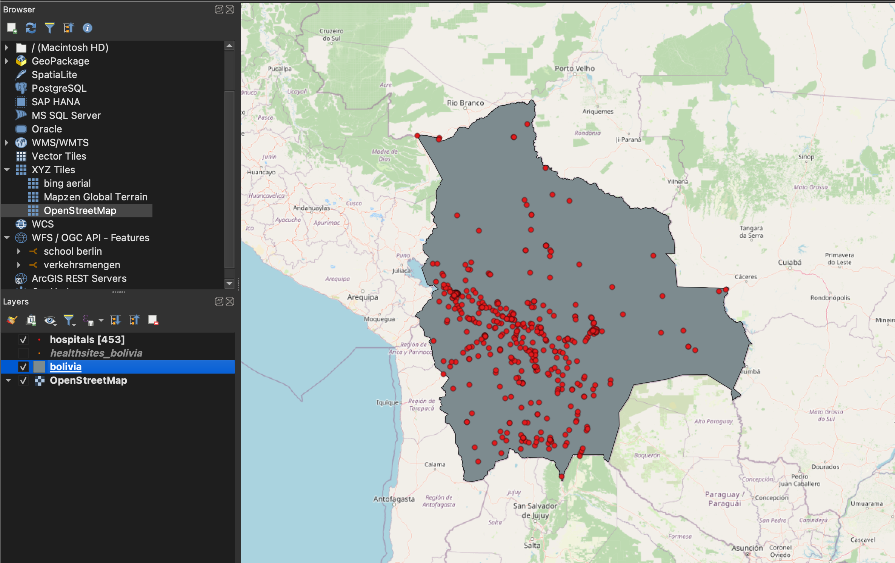

Exercise 3: Data sources#
Aim of the exercise#
The aim of this exercise is to navigate various data sources, gain an understanding of where and how to access relevant data, and identify potential problems. It is important to use reliable, up-to-date, and appropriate data sources that fit the purpose of the analysis to ensure a successful and meaningful results. Always consider your analysis objectives and requirements and search for data accordingly.
Relevant wiki articles#
Data#
Since the exercise is about finding data, there won’t be any data to download. Instead download the usual folder structure here and add in your data as you download it.
Tasks#
The objective of this exercise is to find out how many hospitals are located in Bolivia and how they are distributed across the country.
Find a data source to download the administrative boundaries and healthsites of Bolivia. The following instructions are designed for the example of Bolivia. If you wish to perform the same analysis for another country, some instructions may differ, but the general workflow will remain the same.
Possible data sources
Test downloading the administrative boundaries on OSM Boundaries and the healthsites on healthsites.io.
Download the data and save the administrative boundaries as
boliviaand the healthsiteshealthsites_boliviainto thedata\inputfolder.
Note
Make sure to only use the point data from the healthsites dataset. Other data shapes such as lines or polygons can be ignored in this example. Depending on the data source, information can be provided as points, but also as lines or polygons.
Load both vector files into QGIS.
Now add the OpenStreetMap base map via the browser window –> XYZ Tiles. Performing this step is beneficial for gaining an understanding of the location of the area of interest and creating more informative maps in the process.
Familiarise yourself with the data by opening the attribute table and identify the different types of healthcare that are included in the dataset. Gain an understanding of the additional information provided alongside the healthsites and their type.
We now need to filter the healthsites layer to display only hospitals.
Hint
For information on how to easily filter your data by manually selecting features in the attribute table after it has been sorted based on a particular column, see the attribute table page on the wiki.
To view only the selected features (hospitals) and apply the filtering, we can first display these features in the attribute table by clicking on
Show Selected Featuresin the bottom left corner, and then export only the selected features and save them ashospitals_boliviain yourdata\outputfolder.
Save your project and display your results. Ensure that both the country of Bolivia and the hospitals are visible and styled appropriately.
Result#
{kind=link}

Fig. 49 Your map could look like this when you have finished the exercise.#
The distribution of hospitals across Bolivia is uneven. It is noticeable that there are significantly less hospitals in the northern and eastern parts of Bolivia.